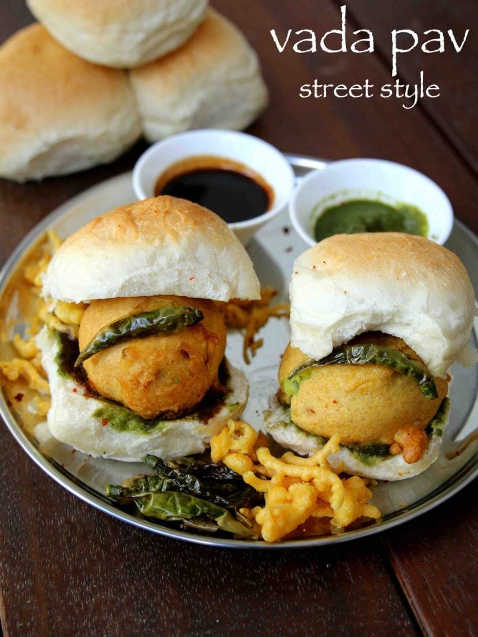

Vada Pav

Description
Vada Pav is sold in shops, outside of schools and colleges all over Mumbai because
it is so popular and loved by street food lovers.
It is one of the most humble street foods in Mumbai, yet it is tasty and delicious.
Vada pav basically has Batata Vada which is sandwiched between two slices of a pav
(fluffy dinner roll) topped with sweet chutney, green chutney, and dry garlic chutney.
Ingredients
- For aloo mixture:
- 2 tsp oil
- ½ tsp mustard
- Pinch of hing / asafoetida
- Few curry leaves
- 1 inch ginger (crushed)
- 2 clove garlic (crushed)
- 1 chilli (finely chopped)
- 2 tbsp coriander (finely chopped)
- ¼ tsp turmeric / haldi
- 2 potato / aloo (boiled & mashed)
- ½ tsp salt
- 1 tbsp lemon juice
- For besan batter:
- ¾ cup besan / gram flour
- 1 tbsp rice flour
- ¼ tsp turmeric / haldi
- ¼ tsp kashmiri red chilli powder / lal mirch powder
- Pinch of hing / asafoetida
- ¼ tsp salt
- ¼ tsp baking soda
- ½ cup water
- Oil for deep frying
- Other ingredients:
- 6 ladi pav
- 7 green chilli
- 6 tsp green chutney
- 3 tsp tamarind chutney
- 3 tsp dry garlic chutney
Steps
- Firstly, take ball sized aloo mixture and dip in besan batter and coat well.
- Deep fry in hot oil stirring occasionally.
- Now slit the ladi pav and spread 1 tsp green chutney, ½ tsp tamarind chutney and ½ tsp dry garlic chutney.
- Place the prepared vada in center of pav, chura and fried chilli.
- Finally, press the vada pav and serve immediately.